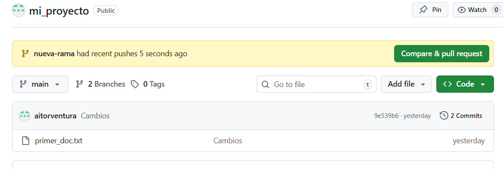
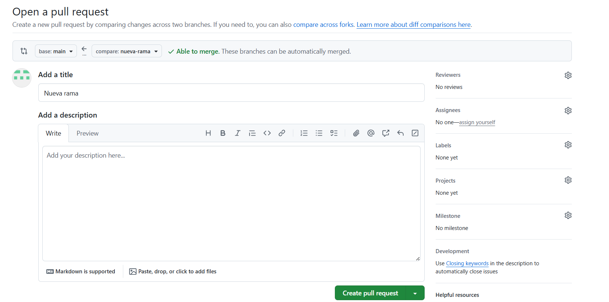
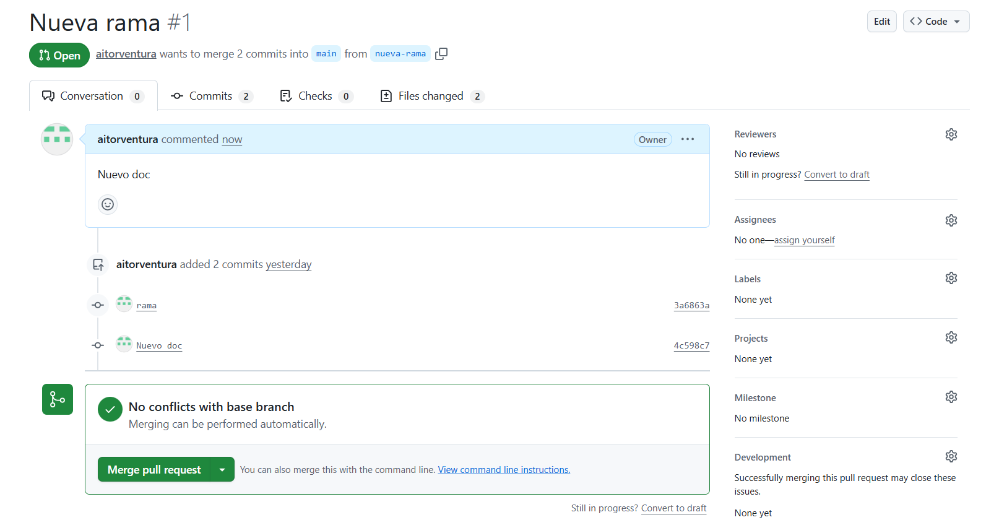

🤝 8. Colaboración y Gestión de Proyectos en GitHub¶
Descarga de diapositivas
Una de las grandes ventajas de usar Git junto con plataformas de alojamiento como GitHub es la capacidad de colaborar con miles de desarrolladores alrededor del mundo en proyectos de código abierto (Open Source), o coordinarte eficientemente con los compañeros de tu propia empresa.
En este apartado exploraremos dos de los conceptos estrella de GitHub para el trabajo colaborativo: los Forks y las Pull Requests.
🍴 Forks (Bifurcaciones)¶
Un Fork consiste en hacer una copia exacta de un repositorio ajeno (perteneciente a otro usuario u organización) directamente en tu propia cuenta de GitHub.
Imagina que encuentras un proyecto interesantísimo (por ejemplo, el código fuente de un videojuego o de una biblioteca que usas a diario) y quieres mejorarlo añadiendo una funcionalidad, pero tú no tienes permisos de escritura en su repositorio original para hacer un push.
La solución es hacer un Fork. Al pulsar el botón "Fork" situado arriba a la derecha en la interfaz de GitHub de cualquier repositorio público:
- GitHub crea una copia clonada y aislada de ese proyecto dentro de tu usuario.
- En esa nueva copia "bifurcada" tú tienes el control total. Puedes clonarlo a tu ordenador local, crear ramas, editar código, borrar archivos y hacer tantos
pushcomo desees, sin miedo a romper el proyecto del autor original. - Git y GitHub siempre recordarán mediante un enlace invisible de qué proyecto original proviene tu Fork, facilitando el trasvase de información entre ambos en el futuro.

Qué estás viendo en la captura
- Botón de Fork en la esquina superior derecha de un repositorio ajeno.

Qué estás viendo en la captura
- Pantalla de creación del Fork, donde se crea la copia del proyecto bajo tu propio namespace.
Sincronización del Fork¶
A medida que pasa el tiempo, los dueños del proyecto principal seguirán avanzando y subiendo código. Si quieres que tu Fork en GitHub reciba esos avances, en la propia página principal de tu repositorio verás un botón llamado Sync fork. Al pulsarlo, GitHub integrará limpiamente las novedades del repositorio original dentro de tu copia local.
📩 Pull Requests (PRs)¶
Una Pull Request (abreviada comúnmente como PR) es una solicitud formal que envías a los responsables de un repositorio diciéndoles: "Oye, he escrito este código en una de mis ramas y creo que mejora el proyecto. Solicito que lo reviséis y lo integréis (hagáis pull) hacia vuestra rama principal".
¿Cuándo y cómo se crean?¶
Las Pull Requests son el estándar de la industria tanto si intentas aportar código al proyecto Open Source del que previamente hiciste un Fork, como si estás trabajando dentro del mismo repositorio de empresa junto a tu equipo (en este caso, habrás creado una rama local propia feature/nueva-pantalla, la habrás subido y abrirás la PR contra la rama main comunitaria).
A la hora de redactar y abrir una PR en GitHub, debes configurar cuatro selectores clave:
- Base repository: El proyecto recipiente final (donde va a ir a parar tu código).
- Base: La rama de destino de ese proyecto (casi siempre
mainodevelop). - Head repository: El proyecto desde donde ofreces el código (suele ser tu propio Fork).
- Compare: La rama exacta donde tienes guardados los commits que estás ofreciendo.
Además de configurar esos selectores, se te pedirá que escribas un Título claro y una Descripción detallada explicando qué problemática resuelve tu código y cómo funciona.

Qué estás viendo en la captura
- Aviso en el repositorio tras hacer
pushde una rama nueva, invitándote a crear la PR con el botón Compare & pull request.

Qué estás viendo en la captura
- Pantalla de apertura de la Pull Request en GitHub ("Open a pull request").
PR desde el mismo repositorio vs desde un Fork
En las capturas anteriores, la Pull Request se ha hecho desde el mismo proyecto y usuario (ofreciendo una rama propia secundaria hacia la rama base: main del mismo repositorio).
Sin embargo, si estuvieses contribuyendo al código de otra persona desde tu Fork, los menús desplegables del bloque "Compare changes" serían ligeramente diferentes. Mostrarían como base repository el repositorio del autor original (ej. autor original/proyecto), y en head repository aparecería tu copia bifurcada que contiene tus cambios locales (ej. tu-usuario/proyecto).

Qué estás viendo en la captura
- Vista de la PR una vez abierta. Aquí el equipo puede revisar el código propuesto, discutir detalles en el chat integrado o aprobar los cambios (Approve).

Qué estás viendo en la captura
- El administrador del repositorio hace clic en Merge pull request una vez todos consideran que el código es válido.

Qué estás viendo en la captura
- Estado de la PR convertida a "Merged" (etiqueta morada), lo que confirma que el trabajo ha pasado oficialmente a integrarse a la rama principal.
El paradigma del Trabajo Colaborativo Abierto
- Crear el Fork del proyecto principal.
- Clonártelo (
git clone) a tu ordenador. - Crear una nueva rama dedicada al arreglo (
git checkout -b arreglo-x). - Programar, guardar y consolidar (
git commit). - Subir la rama a TU versión del repositorio (
git push origin arreglo-x). - Ir a la web de GitHub y darle al botón dorado "Compare & pull request".
Enlazando PRs con Incidencias (Issues)¶
En grandes proyectos el trabajo se organiza usando Issues (incidencias o tickets). GitHub tiene una función mágica: si en la descripción de tu Pull Request escribes ciertas palabras clave (como Closes, Fixes o Resolves) seguidas del número del ticket, GitHub lo enlazará todo automáticamente.
Si en tu PR escribes Closes #10, al momento en que los mantenedores acepten y fusionen tu PR, el ticket #10 de la pestaña Issues pasará a estado cerrado ("Done") automáticamente, ahorrando trabajo de gestión manual y creando un historial de desarrollo perfectamente trazable.
🎫 Gestión y Seguimiento: Otras herramientas de GitHub¶
Además del código en sí (Pestaña Code) y las Pull requests, la interfaz de un repositorio en GitHub ofrece herramientas integradas muy potentes para la gestión del proyecto y el trabajo en equipo:
🎯 Issues (Incidencias)¶
La pestaña Issues es el sistema principal de seguimiento de tareas, reporte de errores (bug tracking) y solicitudes de nuevas características o mejoras.
- Permite a los usuarios, miembros del equipo y desarrolladores externos reportar problemas, proponer ideas o discutir detalles antes de escribir código.
- Cada Issue posee su propio hilo de conversación temporal y persistente.
- Se le pueden asignar responsables (Assignees), añadir etiquetas de colores (Labels como
bug,documentationoenhancement) y agrupar en torno a fechas de entrega o versiones (Milestones). - Como vimos en el apartado anterior, se pueden enlazar y cerrar automáticamente mediante palabras clave (ej.
Closes #12) emitidas desde commits o Pull Requests.
🗂️ Projects (Proyectos)¶
La pestaña Projects ofrece tableros visuales personalizables en vistas Kanban o como tablas (similares a herramientas como Trello o Jira) combinadas directamente con tus repositorios.
- Ayuda en la organización, planificación y priorización de la carga de trabajo arrastrando las tarjetas por columnas semánticas (
To Do,In Progress,Done). - La verdadera ventaja radica en su integración: estas tarjetas enlazan vivamente a Issues o Pull Requests del repositorio. Si una PR vinculada se aprueba y se fusiona, la tarjeta correspondiente puede saltar por sí sola a la columna final de "Terminado".
📚 Otros elementos importantes¶
- Wiki: Es un espacio integrado destinado a documentar extensivamente y con estructura de páginas web un determinado proyecto. Funciona como el lugar idóneo para guardar manuales de uso detallados, guías para desarrolladores externos, FAQs, etc., liberando al archivo principal
README.mdde saturación de texto y facilitando la navegación. - Actions: Es el cerebro que permite definir automatizaciones (Integración y Entrega Continua, CI/CD) específicas para tu repositorio. Mediante "Actions", GitHub puede ser instruido para que lance comandos o servidores temporales en la nube de forma transparente respondiendo a eventos concretos (como pasar unos tests obligatorios siempre que alguien trate de introducir código mediante una PR al entorno de producción, o desplegar una web estática sola cuando tu rama
maincambie).
🔒 Protecciones y Reglas de ramas¶
Como ya te imaginarás, cuando múltiples personas convergen haciendo Pull Requests hacia la rama main, dejar la puerta abierta a que cualquiera pueda empujar código (push) reescribiendo la historia directamente o rompiendo cosas no es viable.
En "Settings > Rules" de los repositorios de GitHub, los administradores suelen blindar sus ramas principales exigiendo que:
- Solo se pueda introducir código allí mediante mecanismos formales como PRs aprobadas, bloqueando un
pusha la brava desde consola. - Que un cierto número de compañeros hayan revisado humanamente el código y lo hayan aprobado.
- Que el código supere exitosamente tests automatizados de forma transparente (Integración Continua) antes de activar el botón verde brillante de "Merge".
✅ Ideas clave (muy resumidas)¶
Cheatsheet Colaborativo de GitHub
- Fork: Botón web para hacerte dueño absoluto de una copia de un proyecto de otro usuario sin tocarle su trabajo orginal.
- Pull Request (PR): Solicitud diplomática en la nube para que empaqueten tus commits aportados con el software general. Pasa por procesos de revisión manual.
- Sync fork: Función para poner la rama
mainde tu Fork al día con las novedades que ha tenido el canal principal (upstream). - Palabras mágicas en las PRs como
Fixes #25vincularán permanentemente tu código a ese problema documentado en el sistema de tickets (Issues) del proyecto.